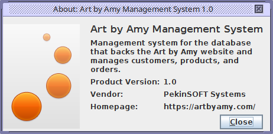
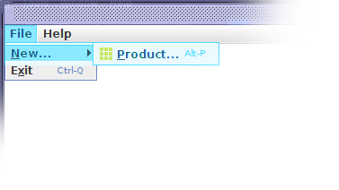
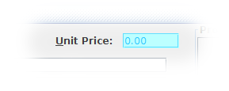

AboutBox.png
The Art by Amy Management System is a simple application for Amy to use to manage the data for her company. This management system provides functionality for adding products to the database, viewing and managing orders placed by customers, as well as managing the customers themselves. The website simply pulls information from the database and displays it on the website https://artbyamy.com.
This Help System is here to answer questions that you may have about using this application. There are a number of detailed pages about the various windows and dialogs that will be encountered while using Art by Amy Management System. Most of these pages also contain images to aide in understanding the topic disucussed.
As an example, when viewing the topic about adding a new product to the database, the topic mentions clicking on the File menu, then the New... menu, then the Product menu item. The picture that accompanies this topic looks as follows:

New Product Menu
As you can see, the menus involved in the operation of opening the Product Entry window are highlighted to stand out against any other elements in the image. The callout color is not how the menus, buttons, or fields will appear in the application. That color is only there to visually enhance the help images.
Another aspect of the images used throughout this Help System is that, whenever possible, the window which is being discussed will have been cropped to the relative portion to further assist in calling out the part of the window being discussed. Therefore, do not be surprised when you see an image like the one below when the details of a specific data entry field are being discusssed.

Unit Price
Whenever you see an image like this, the entire discussion topic is about that specific field. We try to keep the fields in a little bit of context within the window, but it is not always possible for us to do so. Therefore, on occasion, a field may be presented like the one above. Regardless of how the field is presented, we have striven to always highlight the field with an offset color similar to the color in the image above. Just understand that the fields within the running application will not be represented in the color they are represented in here.